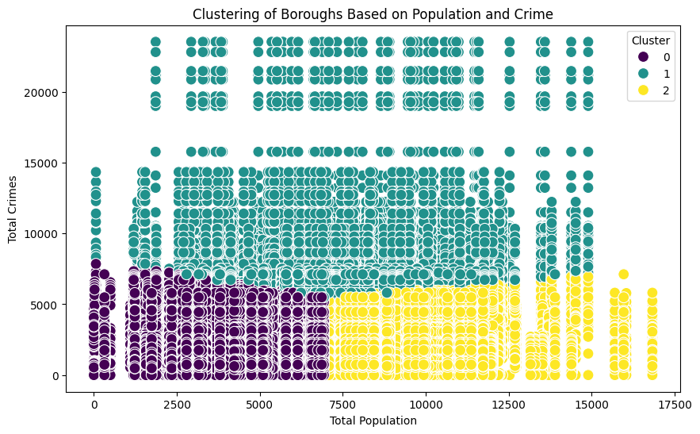
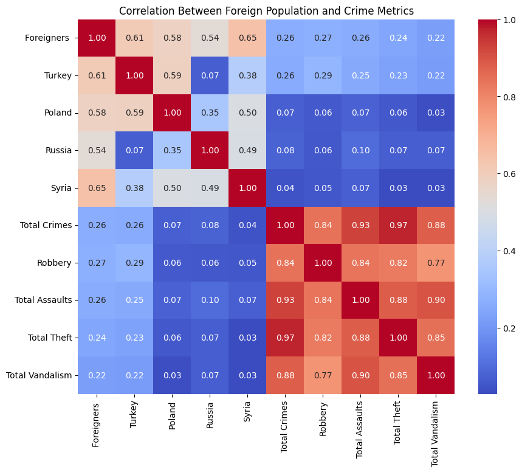

November 2024
Foreign Population & Crime in Berlin
Exploratory public-data analysis of demographic and crime indicators across Berlin boroughs.



Approach
The project compares demographic and crime variables, builds correlation matrices and groups boroughs using clustering to look for patterns that may warrant deeper investigation.
Interpretation
Correlations in this project are descriptive and do not establish causation. Socio-economic context and more granular time-series data would be required for stronger conclusions.